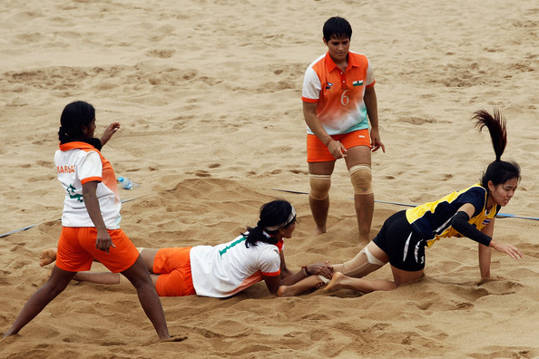

Kabaddi is a contact sport that originated in ancient India. Kabaddi is an umbrella term which encompasses various forms of the game including International rules Kabaddi; budheliya parth, Gaminee, Amar and Punjabi.[1][2][2][3] Kabaddi also encompasses similar sports known by their regional names, such as hadudu in Bangladesh, bhavatik in Maldives, chedugudu in Andhra Pradesh, sadugudu in Tamil Nadu and jai bhavani in Maharashtra.
Kabaddi is the national game of Bangladesh and also the state game of the Indian states of Tamil Nadu, Gujarat, Maharashtra, Bihar, Andhra Pradesh, Telangana and Punjab. Also top grossing game after the Indian National event Pro Kabaddi League[5]
History
Various forms of kabaddi are played. Hence, many states in India lay claim to the game. Some forms of kabaddi originated in the southern Indian state of Tamil Nadu, where it is derived from group hunting and village defence.[9][10][11] Other forms of kabaddi originated in northern parts of India.[12][13][14] Although the game is a traditional sport in various parts of South Asia, the modern standardised version identifies kabaddi with Maharashtra where the process of standardising the rules of kabaddi took place from 1915 through to the 1920s.[15][16][17][18] Though variations emerged and rules were framed, the game’s principal objective remained unchanged.[19]
Modern kabaddi is therefore a synthesis of the game played in various forms under different names.[20] Kabaddi received international exposure during the 1936 Berlin Olympics, demonstrated by India. The game was introduced in the Indian National Games at Calcutta in 1938. In 1950 the All India Kabaddi Federation (AIKF) came into existence and framed the rules. The AIKF was reconstituted as The Amateur Kabaddi Federation of India (AKFI) in 1972 and the first national tournament for men was held in Chennai.[21]
Kabaddi was introduced to and popularised in Japan in 1979 by Sundar Ram of India, who toured Japan on behalf of Asian Amateur Kabaddi Federation for two months to introduce the game.[22] In 1979, matches between Bangladesh and India were held across India. The first Asian Kabaddi Championship was held in 1980 and India emerged as champion, beating Bangladesh in the final. The other teams in the tournament were Nepal, Malaysia, and Japan. The game was included for the first time in the Asian Games in Beijing in 1990 where seven teams took part.